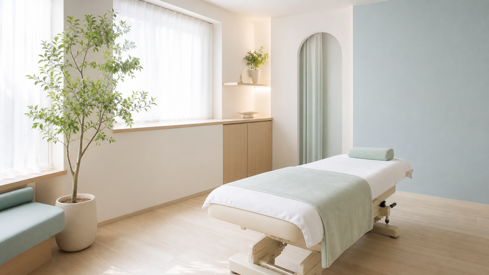

RELAX & CARE
国家資格をもつ施術者が、一人ひとりの体に合わせて丁寧に。無理な勧誘は一切ありません。
CHECK
・朝起きると腰が重い ・肩こりが慢性化している・整体に通っても、その場しのぎで戻ってしまう
3つの安心
まず体の状態をしっかり確認。原因からご説明します。
バキバキしない、痛くない施術。初めての方も安心です。
その場しのぎでなく、良い状態が続くようサポートします。
ご来院の流れ
お客様の声
はじめての方へ
まずはお体の状態を見せてください。通うかどうかは、その後ゆっくりお決めいただけます。
初回カウンセリング＋施術 【 】円